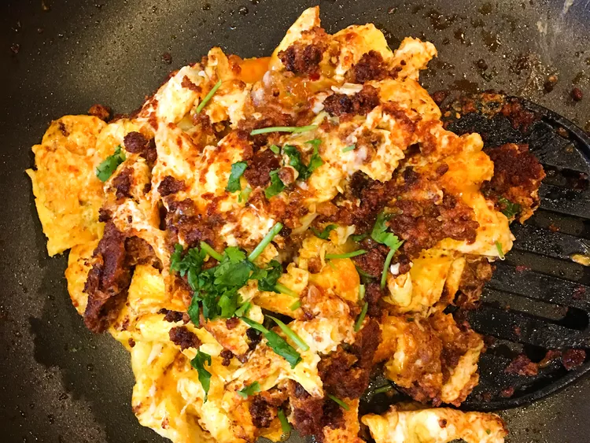

Scrambled Eggs with Chorizo

Dish Description:
This chorizo and egg dish is an appetizing breakfast with spicy flavor.
Prep Time: 5 mins
Cook Time: 10 mins
Total Time: 15 mins
Servings: 2
Ingredients:
- Cooking spray
- ¼ cup Mexican-style chorizo, or more to taste
- 6 large eggs
- Salt to taste
Directions:
- Step 1
- Grease a large nonstick skillet with cooking spray; warm over medium-high heat.
- Cook and stir chorizo in the hot skillet until browned, about 5 minutes.
- Step 2
- Whisk together eggs and salt in a medium bowl until combined;
- pour over chorizo in the skillet; cook and stir until eggs are set, about 5 minutes.
- Tips
- You can add whatever you like to this dish because eggs are very versatile.
- Don't forget the bacon!